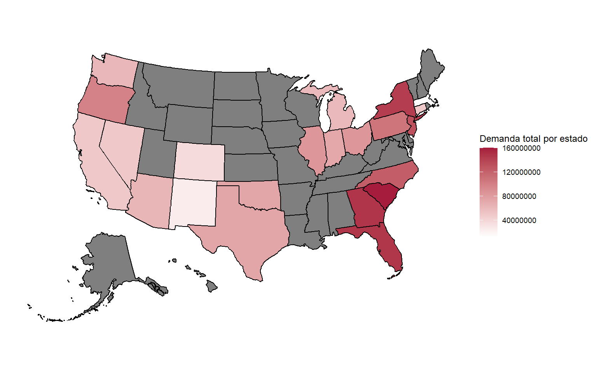
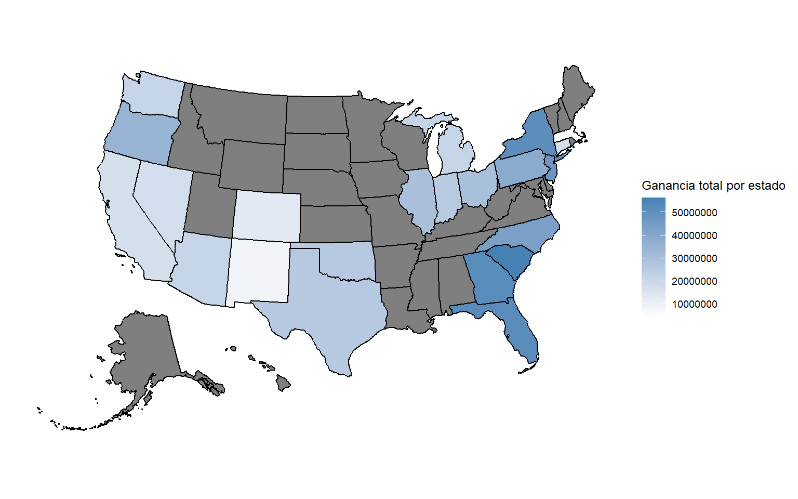
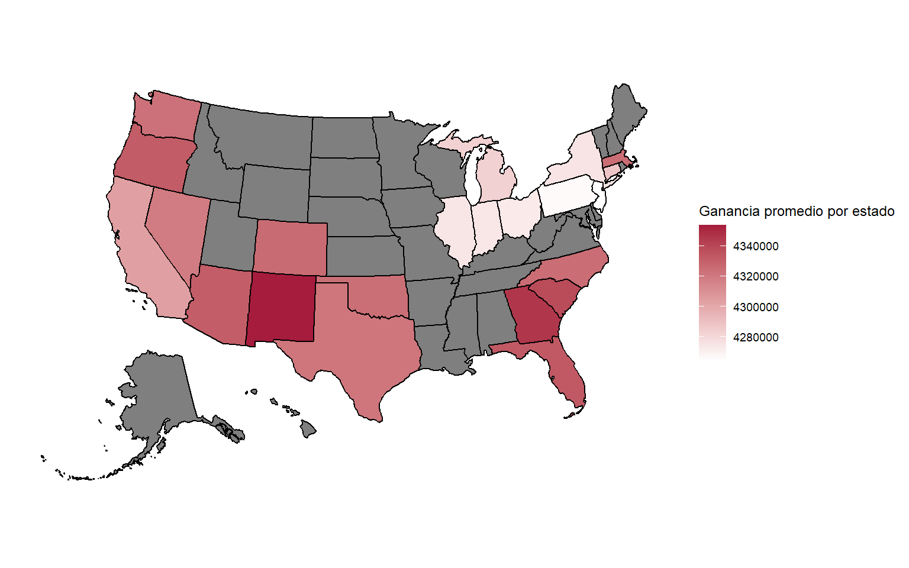

La Casa de Asterión: estimación de demanda y optimización de precios de artículos de venta minorista
1 Introducción
La empresa La Casa de Asterión es una cadena de negocios minoristas de artículos para el hogar, la cual cuenta con 15 tiendas en distintas regiones de Estados Unidos. Recientemente dicha empresa ha detectado una reducción en las ganancias y buscan evaluar y mejorar su estrategia de precios para aumentar el rendimiento.
Teniendo en cuenta que la fijación de precios es un factor clave para el rendimiento de cualquier negocio. Un precio demasiado alto puede reducir el volumen de ventas, mientras que uno demasiado bajo puede disminuir el margen de ganancia, incluso si la demanda aumenta. Encontrar el punto de equilibrio adecuado requiere no solo un análisis detallado de las ventas y de la elasticidad de la demanda, sino también la consideración de factores externos como la competencia, la estacionalidad y los cambios en las preferencias de los consumidores.

Se busca comprender a fondo la relación entre sus precios, la demanda y otros factores que puedan influir en su rendimiento, con el objetivo de implementar una estrategia de precios más eficiente y orientada a resultados.
Se trabajará con información proveniente de las transacciones realizadas en 9 cadenas de negocios minoristas, entre las que se encuentra nuestro cliente La casa de Asterion, en un periodo de 3 años, donde se podrá obtener información de cada uno de los negocios y diferentes características relacionadas al producto que se vende.
Aclaración: cuando se habla de transacción no refiere al evento completo de la compra, sino a la cantidad de productos iguales dentro de una compra.
2 Objetivos
A lo largo de este trabajo tendremos en cuenta 2 objetivos principales:
- Predecir la demanda diaria de la semana siguiente a la finalización de los datos disponibles.
En base a la información prevista de las transacciones, se busca generar un modelo predictivo con el cual se pueda estimar de manera adecuada la demanda en pesos ($) para cada uno de los días en la semana posterior al fin de los datos (desde el 1/1/2024 al 7/1/2024) de los distintos subproductos, en cada una de las tiendas minoristas.
- Proponer soluciones para maximizar la ganancia.
Como ya se mencionó anteriormente, la cadena Casa de Asterión presentó una disminución de las ganancias en el último tiempo. Por lo que se busca identificar, para cada producto, el precio óptimo que maximice la ganancia, equilibrando el ingreso por unidad vendida con el volumen total de ventas y de esta manera poder revertir la situación.
3 Metodología
3.1 Datos
Fueron proporcionadas 6 bases de datos con distinta información relevante para la realización de este trabajo:
eci_transaction
Es la base de datos principal en este trabajo, en ella se encuentra información referida a las transacciones realizadas desde el 1 de enero de 2021 hasta el 31 de diciembre de 2023, en las 157 tiendas minoristas presentes en el estudio (pertenecientes a las 9 cadenas ya mencionadas). Las variables aquí presentes son:
📂 Variables
TRANSACTION_ID: id de la transacciónDATE: fecha de la transacciónSTORE_ID: id de la tiendaSKU: número de referencia CCCGGSSXXX donde C es la categoría, G el grupo, S subgrupo y X es el número secuencial del productoQUANTITY: cantidad de productos que se vendieron en esa transacción.PRICE: precio del producto.TOTAL_SALES(PRICExQUANTITY): dinero que recibe el local en una transacción.SUBGROUP: subproducto.STORE_SUBGROUP_DATE_ID: es el id del subproducto en cierta tienda y en cierta fecha.
eci_stores
Contiene información particular de cada una de las distintas tiendas minoristas,presentando información relacionada a la ubicación y al tipo de tienda.En esta base de datos encontramos:
📂 Variables
STORE_ID: id de la tienda.BRAND: cadena a la que pertenece la tienda.STORE_NAME(generalmente formado por BRAND - CITY): nombre de la tienda.ADDRESS1yADDRESS2: información sobre la dirección de la tienda.CITY: ciudad de la tienda.STATE: estado de la tienda.ZIP: código postal de la tienda.OPENDATEyCLOSEDATE: fecha de inicio y de cierre de la tienda.STORE_TYPE: tipo de tienda.REGION: región de la tienda.
eci_stores_cluster
Este archivo contiene información de las tiendas minoristas,
repitiendo las variables STORE_ID, BRAND y
STORE_NAME, y agrega una variable que agrupa las tiendas
por zona o región:
📂 Variables
STORE_ID: id de la tienda.BRAND: cadena a la que pertenece la tienda.STORE_NAME(generalmente formado por BRAND - CITY): nombre de la tienda.CLUSTER: zona o región de la tienda.
eci_product_master
Contiene información más específica de los productos como el nombre, el precio inicial, el precio sugerido por el fabricante, los costos del mismo, entre otras:
📂 Variables
SKU: número de referencia CCCGGSSXXX donde C es la categoría, G el grupo, S subgrupo y X es el número secuencial del productoPRODUCT_NAME: nombre del producto.CATEGORY: categoría del producto.GROUP: grupo del producto.SUBGROUP: subproducto.BRAND: cadena a la que pertenece la tienda.base_price: precio al que el negocio puso en venta al producto en primera instancia.initial_ticket_price: precio del producto sugerido por el fabricante.costos: costo del producto.
eci_product_groups
Identifica productos que han estado en precio promocional por algún motivo, contiene las siguientes variables:
📂 Variables
SKU: número de referencia CCCGGSSXXX donde C es la categoría, G el grupo, S subgrupo y X es el número secuencial del productoPRODUCT_NAME: nombre del producto.price_group_id: id de la promoción.price_group_name: nombre completo de la promoción.group_type: tipo de promoción.
eci_customer_data
Contiene información de 801923 clientes, identificando datos personales de los mismos e identificando a los que son socios de dichas cadenas:
📂 Variables
client_id: id del cliente.phone_number: número del cliente.email_address: dirección de email del cliente.city: ciudad de residencia del cliente.state: estado de residencia del cliente.zip_code: codigo postal del lugar de residencia del cliente.education_level: nivel de educación del cliente.occupation: ocupación del cliente.loyalty_member: identifica si el cliente es socio o no de la cadena.loyalty_number: número de socio del cliente en caso de serlo.loyalty_points: puntos de membresía del cliente socio.
3.2 Manejo de los datos
Antes de iniciar el análisis, fue necesario realizar una inspección exhaustiva de los datos. Este proceso permitió identificar aspectos relevantes vinculados al preprocesamiento, tales como la detección de valores atípicos, la presencia de datos faltantes y otras cuestiones que requerían tratamiento previo. Dichas cuestiones se enuncian a continuación:
- Base de clientes (
eci_customer_data)
Al analizar las variables disponibles en esta base, quedó evidenciado que no hay una variable que conecte la información aquí disponible con el resto de las bases. Es decir, se cuenta con la información de los clientes, pero no es posible identificar en que tienda compra cada uno, o que transacción realiza cada uno. Por este motivo no se utilizará esta información, al menos en este primer análisis.
- Outliers
Observando las variables cuantitativas de las bases de datos que se usarán inicialmente no se detectaron valores atípicos.
(Insertamos tabla con quartiles, minimo, media y maximo?)
- Valores faltantes
Se realizó una inspección por cada una de las variables de interés y
en la base de datos eci_transaction se encontraron valores
faltantes en la variable QUANTITY, la cual como mencionamos
anteriormente puede calcularse como
TOTAL_SALES/PRICE, de esta manera se pudo
reconstruir el dato e imputar todos los valores faltantes de dicha
variable.
En la base de datos eci_stores, hay datos faltantes en
las variables ADDRESS2, CLOSEDATE y
STORE_TYPE. Para las variables ADDRESS2 y
CLOSEDATE puede que esto no sea un error en sí, sino que no
esten los datos debido a que la tienda no tiene una segunda dirección o
porque todavía no cerró respectivamente. Para la variable
STORE_TYPE encontramos 2 datos faltantes, en los locales
QuickBuy - Columbia y MarketExpress Lakewood Uptown, los cuales fueron
reemplazados por el valor Unknown, ya que no es posible saber
de que tipo de tienda se trata.
- Datos del subproducto “Basketball”
Al revisar la base de transacciones (eci_transaction) se
identificó que no existen registros asociados al subproducto
“Basketball”, a pesar de que este se encuentra incluido en la base de
productos (eci_product_master) y forma parte de los
subproductos a predecir en el primer objetivo. Una posible explicación
es que los SKU correspondientes a los subproductos de las categorías
“Basketball” y “Baseball” presentan coincidencias en su codificación
(por ejemplo, SPOTEBA001), lo que podría haber generado un error en el
proceso de carga de datos y derivado en la ausencia de registros para
“Basketball”.
Una alternativa para solucionar este problema fue realizar el
supuesto de que la demanda de ambos subproductos era similar, y en base
a esto realizar las correspondientes predicciones. Como no se cuenta con
la información de la demanda, ya que no podemos identificarlos entre las
transacciones, podemos evidenciar las similitudes en las variables
base_price, initial_ticket_price y
costos:
| subgroup | base_price_avg | initial_ticket_price_avg | costos_avg |
|---|---|---|---|
| Baseball | 91.95 | 109.11 | 54.75 |
| Basketball | 94.03 | 114.60 | 51.44 |
Se observan similitudes tanto en los precios iniciales promedio, como en los costos promedios para los productos de Basketball y Baseball.
4 Desarrollo
4.1 Objetivo 1 - Estimación de demanda
Para el desarrollo del Objetivo 1, se aplicarán técnicas de Machine Learning con el propósito de entrenar los datos y estimar la demanda de los distintos subproductos. Asimismo, se llevará a cabo un procedimiento de estimación de precios correspondiente a la semana de referencia para la generación de pronósticos. Estos valores estimados se incorporarán como variables explicativas en el modelo, con el objetivo de predecir de manera adecuada la demanda en la semana posterior al fin de los datos.
4.1.1 Preprocesamiento de los datos - Objetivo 1
Para la preparación de los datos, se realizaron diversos procesos de depuración y combinación de las bases disponibles, con el fin de obtener un conjunto único que permitiera entrenar el modelo de predicción de la demanda.
En primer lugar, a partir de la base eci_stores se
identificaron y excluyeron aquellas tiendas que habían cerrado antes de
la semana del 1 al 7 de enero de 2024, ya que no tendría sentido estimar
demanda para locales que ya no se encontraban operativos.
Posteriormente se combinaron las bases eci_stores y
eci_product_master con la base
eci_transactions. De esta forma, cada transacción no solo
contiene información sobre la venta realizada, sino también el nombre y
la categoría del producto, la tienda donde se comercializó y su región,
la franquicia a la que pertenece, entre otras características.
Sobre esta base consolidada, se generaron 3 nuevas variables
temporales a partir de la columna DATE, extrayendo el día,
mes y año de cada transacción.
Finalmente, las transacciones se agruparon por día, por subproducto y
por tienda (STORE_SUBGROUP_DATE_ID), con el propósito de
entrenar los datos de esa manera y asi poder cumplir el objetivo de
predecir la demanda desde el 1/1/2024 al 7/1/2024 de los distintos
subproductos, en cada una de las tiendas minoristas. También, como dato
adicional, esto hace que se reduzca el costo computacional que conlleva
entrenar los datos, debido a la reduccion de filas en la base que este
agrupamiento implica, pasando de trabajar con 19.004.759 de datos a una
base final con 5.137.958 de datos.
En síntesis, el proceso de preparación de datos permitió pasar de múltiples bases dispersas a un único conjunto de datos estructurado, listo para ser utilizado en el entrenamiento de los modelos predictivos y para el análisis descriptivo que sigue a continuación.
4.1.2 Análisis descriptivo - Objetivo 1
Al querer estimar la demanda (TOTAL_SALES) de manera
adecuada, se plantea el análisis descriptivo buscando evidenciar que
variables entre las que se encuentran disponibles en nuestras bases
pueden influir en el comportamiento de la variable respuesta
mencionada.
Se cuenta con información de articulos pertenecientes a 73 subproductos distintos, e inicialmente se quiere evidenciar si hay diferencias en la demanda para los distintos subproductos.
Claramente se observa que hay 9 subproductos que generaron mucha mayor demanda que el resto, estos productos son Headphones, Speakers, Wearables, Desktops, Smartphones, Home Audio, Tablets, Accesories y Laptops, acumulando un 42% de la demanda total.
Estos artículos tienen características muy similares, todos ellos corresponden a productos electrónicos vinculados principalmente a la informática, telecomunicaciones y entretenimiento audiovisual.
Cada uno de estos subgrupos (se diferencias 73 subgrupos distintos) se pueden agrupar en 23 grupos distintos, y a su vez estos grupos pertenecen a 8 categorías distintas. A continuación se presentan las distribuciones en relación a la demanda total para estas variables.
Tal como se evidenciaba anteriormente, los productos relacionados a la electrónica son los que presentan mayor demanda en $, evidenciandose que los 9 productos que presentaban una mayor demanda que el resto se agrupan en los 3 “grupos”: Audio, Computing y Mobile. Siendo además los 3 grupos que conforman la categoría Electronics.
Otra variable que puede influir en la demanda de cada categoría es la fecha en la que se produjo la transacción, para esto se mostrará la evolución de la demanda a través de los meses en los 3 años que abarca este estudio, y complementariamente mostraremos la demanda por día de la semana.
Viendo la evolución de la demanda por mes para las distintas categorías, se podría detectar cierta estacionalidad, siendo los primeros meses del año (generalmente desde enero hasta marzo/abril) los que menor demanda tienen, lo cual es de esperarse porque suelen ser meses de menor consumo. Es sabido que en los meses de noviembre y diciembre el consumo crece mucho por las fiestas (Thanksgiving, Black Friday, Navidad), posteriormente suele caer en los primeros meses del año y suele volver a repuntar con el inicio de la primavera y algunas campañas de compras (por ejemplo, “back to school” más adelante en el año).
Se procede a analizar la demanda en las distintas regiones geográficas en las cuales pertenecen estas tiendas:

Se observa que los estados con mayor demanda monetaria se encuentran en la zona de la costa este de Estados Unidos, concentrandose en los estados de Nueva York, Florida, Georgia y Carolina del Sur. Pero este analisis inicial no necesariamente brinda una evidencia con respecto a que dichos estados influyen en las ventas de las tiendas, debido a que hay distinta cantidad de tiendas en cada uno de estos. A continuación para tratar este problema, se vuelve a realizar este gráfico pero calculando la demanda promedio de cada uno de estos estados:

Al realizar esta modificación, el panorama ya no es el mismo y se puede observar que los estados que mayor demanda promedio tienen se ubican en el suroeste y son los estados de Nuevo México y Arizona (contando con 2 y 5 tiendas respectivamente). Otra particularidad que no se evidenciaba en el otro gráfico, es que los estados con menor demanda promedio se encuentran todos en la región noroeste del país, lo que nos lleva a pensar que puede que esa sea una zona con menor consumo.
Se puede apreciar con claridad que las tiendas de tipo Street y Mall son las que mayores demanda presentan, con la particularidad que existen las mismas cantidades de tiendas de estos tipos (44 cada uno), y sin embargo las de tipo Street tuvieron una demanda de $48.194.937 mayor.
Al analizar los gráficos, se observa de manera lógica que una mayor cantidad de tiendas se asocia con un incremento en la demanda.
Se evidencia que la marca Essentials Plus es la que mayor demanda presenta, siendo también la marca con mayor cantidad de tiendas.
4.1.3 Técnicas estadísticas - Objetivo 1
Antes de comenzar con el ajuste de modelos, se tiene en cuenta que la
variable a predecir es cuantitativa, por lo que se opta por utilizar
modelos de regresión. En primera instancia se consideraron varias
alternativas, como regresión lineal, Random Forest, modelos de series de
tiempo, entre otros. Sin embargo, dado el enfoque de predicción de cada
uno de ellos, se decide trabajar con Random Forest para captar
relaciones no lineales y predecir la demanda total de manera más
eficiente, las variables explicativas consideradas fueron:
PRICE, SUBGROUP, STORE_TYPE,
REGION, STORE_ID, mes,
dia, año, category,
group y BRAND.
Dado que Random Forest posee múltiples hiperparámetros, se lleva a cabo un proceso de optimización de los mismos. Para ello, se divide el conjunto de datos en 85% entrenamiento y 15% testeo. Dentro del 85% destinado a entrenamiento se realiza un proceso de validación cruzada con 4 “folds” con el objetivo de identificar aquellos hiperparámetros que maximizan el \(R^2\). Luego, con el 15% restante se prueba el modelo ajustado con los hiperparámetros óptimos, verificando que el \(R^2\) obtenido sea consistente con el alcanzado en el proceso de validación. Finalmente, se reentrenará el modelo con los hiperparámetros óptimos con la totalidad de los datos para posteriormente realizar la predicción de la demanda total.

4.1.3.1 Random Forest + modelos ARIMA para la determinación del precio semanal
En esta opción se plantea usar Random Forest para la predicción de la demanda total, y modelos de series de tiempo para la determinación del precio en el conjunto de datos a predecir. La justificación del uso de modelos de series temporales es porque éstos captan los patrones estacionales de los datos y usar esa información es una buena estrategia para determinar el precio.
Se utilizaron 10950 modelos SARIMA que resultan de las combinaciones de las 150 tiendas y 73 subgrupos a predecir, las restantes 150 combinaciones son para las tiendas que venden subgrupos de productos de “Basketball” pero éstas son imputadas al precio que se venden los productos del “Baseball”, para modelar patrones semanales dado que se intuye que los precios en una semana de cada subgrupo de productos en cada tienda tienden a ser los mismos.
Para la determinación del precio en cada subgrupo de productos y en cada tienda, se utilizó el precio mediano de cada producto vendido en ese subgrupo de productos, en cada tienda y semana del año, la utilización de la mediana se debe a que es más robusta ante datos extremos, con esto nos referimos a que va a ser un estimador más consistente del precio.
Dado que había tiendas que no vendían todos los subgrupos de productos todas las semanas, en esas se uso un precio interpolado entre la semana previa y la semana siguiente dando a entender que el precio se comportó de forma estable, luego, si el precio al inicio de la semana era faltante se usaba el precio de la semana siguiente y si el precio de la última semana era faltante se usaba el precio de la semana anterior (estos dos últimos casos son para inicio y final del período en estudio respectivamente).
4.1.3.2 Random Forest + modelos ARIMA para la determinación del precio diario
En esta opción se trabaja de forma similar, se vuelve a utilizar Random Forest para la predicción de la demanda total, y modelos de series de tiempo para la determinación del precio en el conjunto de datos a predecir.
La diferencia entre esta opción y la otra es la forma de como se modelan las series temporales, en este caso, se utilizaron 10950 modelos SARIMA que resultan de las combinaciones de las 150 tiendas y 73 subgrupos a predecir, las restantes 150 combinaciones son para las tiendas que venden subgrupos de productos de “Basketball” pero éstas son imputadas al precio que se venden los productos del “Baseball”, para modelar patrones diarios e intentar captar la mayor cantidad de información posible para el pronóstico del precio.
Nuevamente, para la determinación del precio en cada subgrupo de productos y en cada tienda, se utilizó el precio mediano de cada producto vendido en ese subgrupo de productos, en cada tienda y día del año. Dado que había tiendas que no vendían todos los subgrupos de productos todas los días, se usó un precio interpolado entre el/los día/as previo/os y el/los día/as siguiente/es dando a entender que el precio se comportó de forma estable, luego, si el precio al primer día del año era faltante se usaba el precio de el/los día/as siguiente/es y si el precio al último día del año era faltante se usaba el precio de él/las semana/as anterior/es (estos dos últimos casos son para inicio y final del período en estudio respectivamente).
4.1.3.3 Modelos de “Gradient Boosting” + ARIMA para la determinación del precio semanal
En esta opción se plantea usar modelos de Gradient Boosting para la predicción de la demanda total, que al igual que Random Forest, se utiliza para captar relaciones no lineales en los datos, cabe aclarar que no se realizó una optimización de hiperparámetros, pero se usaron hiperparámetros a conciencia. Los modelos ARIMA utilizados para la determinación del precio semanal fueron los mismos que se utilizaron en la primera opción.
4.1.4 Resultados - Objetivo 1
En esta sección se presentan los resultados de la optimización de hiperparámetros de Random Forest haciendo uso del \(R^2\) para elegir la mejor combinación y, además, la inclusión de la métrica de la tabla pública del concurso (Score), como métrica de comparación entre las opciones postuladas.
En la optimización de hiperparámetros de Random Forest se obtiene la siguiente tabla:
| Árboles | Ínstancias mínimas | \(R^2\) promedio | \(R^2\) desvío |
|---|---|---|---|
| 165 | 9 | 0.7741 | 0.0017 |
| 117 | 9 | 0.7698 | 0.0007 |
| 141 | 5 | 0.7684 | 0.0028 |
| 70 | 10 | 0.7681 | 0.0017 |
| 83 | 6 | 0.7668 | 0.0016 |
| 194 | 7 | 0.7659 | 0.0025 |
| 138 | 9 | 0.7648 | 0.0020 |
| 128 | 10 | 0.7646 | 0.0022 |
| 116 | 6 | 0.7613 | 0.0021 |
Se puede observar que la combinación de hiperparámetros que tiene mayor \(R^2\) promedio resulta de usar 165 árboles y 9 instancias mínimas. El Score de las predicciones usando las 3 estrategias antes presentadas fueron: • Random Forest + modelos ARIMA para la determinación del precio semanal: 0.12876 • Random Forest + modelos ARIMA para la determinación del precio diario: 0.10491 • Gradient Boosting + modelos ARIMA para la determinación del precio semanal: 0.13456 Por lo tanto, el modelo usado para la predicción de la demanda total en la primer semana de enero del 2024 fue “Gradient Boosting + modelos ARIMA para la determinación del precio semanal”.
4.2 Objetivo 2 - Optimización de precios
Como se mencionó previamente, La Casa de Asterión necesita mejorar su estrategia de precios, ya que se ha observado una disminución en las ganancias y desea entender cómo ajustar sus precios para optimizar la demanda y el margen de ganancias de sus productos.
Para abordar este objetivo, se emplearán técnicas de Machine Learning con la finalidad de estimar la cantidad vendida de cada producto, a partir de un conjunto de variables explicativas que permitan obtener la mayor precisión posible en la predicción.
Luego de crear un modelo predictivo de la cantidad de ventas, se deberán identificar los precios óptimos para cada producto que maximicen la ganancia. Esto implica encontrar el equilibrio adecuado entre el precio y la demanda para asegurar que la empresa obtenga el mayor rendimiento posible.
4.2.1 Preprocesamiento de los datos - Objetivo 2
A partir de la base creada luego de combinar las bases
eci_transactions, eci_stores y
eci_product_master, en donde se muestran todas las
transacciones con sus diferentes características, se procede a calcular
las ganancias para cada transacción, las cuales serán de vital
importancia para responder al objetivo en cuestión. El calculo se
realiza de la siguiente manera:
GANANCIAS = TOTAL_SALES -
QUANTITY x costos
A continuación, se realizará un análisis descriptivo con la base armada para este objetivo.
4.2.2 Análisis descriptivo - Objetivo 2
Como se puede apreciar, los dos productos que mayor ganancias totales generaron son CircuitCity Home Audio Edge X y Fashionista Infants Collection, de las categorías Electronics y Clothing respectivamente. También se puede destacar de este gráfico, que 19 de los 20 productos que mayores ganancias totales generaron fueron de la categoría Electronics, la cual por lo visto anteriormente, es la de mayor demanda.
A partir de este gráfico, se puede observar que el producto TechPro Home Audio Ultra 2024 de la categoría Electronics es el que mayor ganancia promedio por unidad generó, y siendo esta categoría la que mejores resultados otorga nuevamente.
Al ver la evolución de las ganancias mensuales de los 5 productos que mayores ganacias totales generaron durante todo el período estidiado, se puede observar un pico de rendimientos en la mayoría de los productos durante mediados de 2022 y también un leve decrecimiento en las ganancias a lo largo de estos años, lo cual es el principal mótivo por el cual La Casa de Asterión busca mejorar su estrategia de precios para así aumentar el rendimiento.
Ganancias por region

ganancia promedio por tienda, por región

ganancias en relación a la diferencia con el precio recomendado por el vendedor
4.2.3 Técnicas estadísticas - Objetivo 2
Para optimizar el precio con el objetivo de maximizar la ganancia, se buscó modelar la cantidad vendida en función de distintas variables explicativas: PRICE, STORE_ID, SKU, category, group, BRAND y REGION. Inicialmente se evaluaron diferentes enfoques, como Regresión Poisson, Random Forest y Gradient Boosting. Sin embargo, debido a la sobredispersión observada en los datos, se optó por utilizar modelos más flexibles, capaces de capturar relaciones no lineales, destacándose en este sentido los modelos de Gradient Boosting. Una vez entrenado el modelo, se construyó una grilla de precios que abarca desde el valor mínimo hasta el máximo observado, con una longitud de 25 puntos. Para cada precio de la grilla se estimó la cantidad vendida utilizando el modelo ajustado. A partir de estas predicciones se calculó la variable:
GANANCIAS = (PRICE - costos) x
QUANTITY, y finalmente se seleccionó el precio que maximiza
dicha ganancia.
4.2.4 Resultados - Objetivo 2
……
5 Resultados generales y conclusiones
……